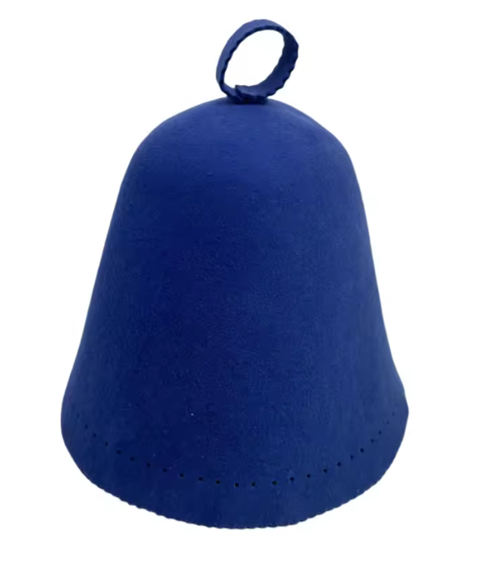
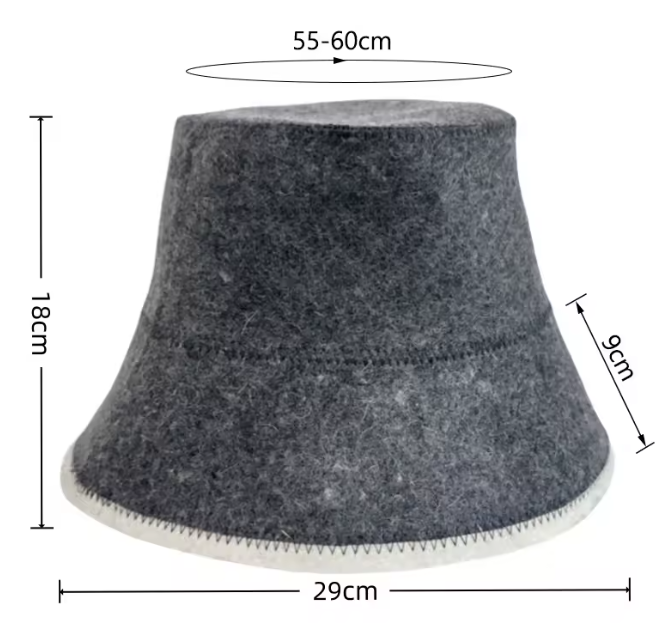

A sauna hat has one job: keep your head comfortable in the hottest part of the room. How well it does that comes down mostly to what it's made of. Here's how the common materials compare.
Why material matters
Heat rises, so the air at head height in a sauna is much hotter than at bench level. Your head and scalp feel it first. A sauna hat works as insulation: it slows the transfer of heat to your head, so your head warms up more slowly than the rest of you. Thicker, denser, natural materials insulate better and stay comfortable to touch at high temperatures.
Wool (felted)
Best for: traditional hot, dry saunas (80–100°C), regular users.
Felted wool is the classic sauna hat, and there's a reason it's lasted. Felt isn't a separate material: it's wool fibres matted together into a thick, dense fabric. That density is what makes it insulate so well. Wool also handles heat without feeling hot to the touch, absorbs moisture without feeling soaked, and holds its shape.
- Pros: excellent insulation, durable, holds a shape (brims and bells), naturally odour-resistant.
- Cons: needs gentle hand-washing, can shrink if you put it in a hot wash or dryer.
Our Bucket and Belltop hats are thick, felted wool.

Merino wool
Best for: frequent sauna-goers, sensitive skin, people who want the softest feel.
Merino is wool from merino sheep, with finer fibres than standard wool. It feels softer and less scratchy against the forehead, which matters if you're wearing a hat for an hour-long session several times a week. A seamless merino hat has no seam to press into your head.
- Pros: very soft, comfortable for long sessions, the same heat-handling and odour resistance as wool.
- Cons: costs more; like any wool, wash it gently.
Our seamless 100% Merino hat comes in five colours.
Linen
Best for: lower-temperature saunas, steam rooms, very light packing.
Linen hats are light, breathable and quick-drying. They give some protection from direct heat and keep sweat out of your eyes, but they're much thinner than felt, so they insulate a lot less. In a properly hot Finnish sauna you'll notice the difference.
- Pros: light, breathable, easy to machine wash.
- Cons: limited insulation, no structure.
Cotton
Best for: occasional use, or a backup hat in the gym bag.
Cotton is soft and washable, but it holds onto sweat and gets heavy and damp. As with linen, it doesn't insulate nearly as well as felted wool.
Synthetic and blends
Avoid hats made mostly of polyester or acrylic. They don't breathe like natural fibres and can get uncomfortably hot against skin. Some cheaper "felt" sauna hats are a wool–polyester blend, so check the label if you care about the difference.
Quick comparison
- Hottest saunas: felted wool or merino.
- Softest, most comfortable: merino.
- Most structure (brim, bell shape): felted wool.
- Lightest and easiest to wash: linen or cotton, at the cost of protection.
Caring for a wool sauna hat
Hand wash in cold water with mild soap, gently reshape it, and lay it flat to air dry. Skip wringing, hot water and the dryer, which are the fastest way to shrink felt. Between sessions, hang it up so it dries out. Treated gently, a good wool hat lasts for years.
Questions
What material is best for a sauna hat?
Natural wool, usually felted, is the best all-round material for a hot, dry sauna. It insulates well, handles high heat, and doesn't feel hot to the touch. Merino is a finer, softer wool for people who want more comfort.
Is felt or wool better for a sauna hat?
They're usually the same thing. Felt is a process, not a fibre: wool fibres are matted together with moisture, heat and agitation into a dense fabric. A good felted wool hat is the traditional sauna hat.
Can you use a cotton or linen hat in a sauna?
You can, and some people like them for lower-temperature or steamy saunas, but they're much thinner than felted wool so they insulate less. For a hot Finnish-style sauna, wool is the better choice.
Should you avoid synthetic sauna hats?
Yes. Polyester and acrylic can get uncomfortably hot against the skin and don't breathe like wool. Some cheap sauna hats are a wool–polyester blend; check the label.
Shop wool sauna hats, shipped across Canada from Squamish.
Bucket, Belltop and 100% Merino. Free shipping on orders over $75.
More from the journal: 12 Sauna Gift Ideas for the Sauna Lover in Your Life · Sauna Etiquette: 12 Unwritten Rules · All posts